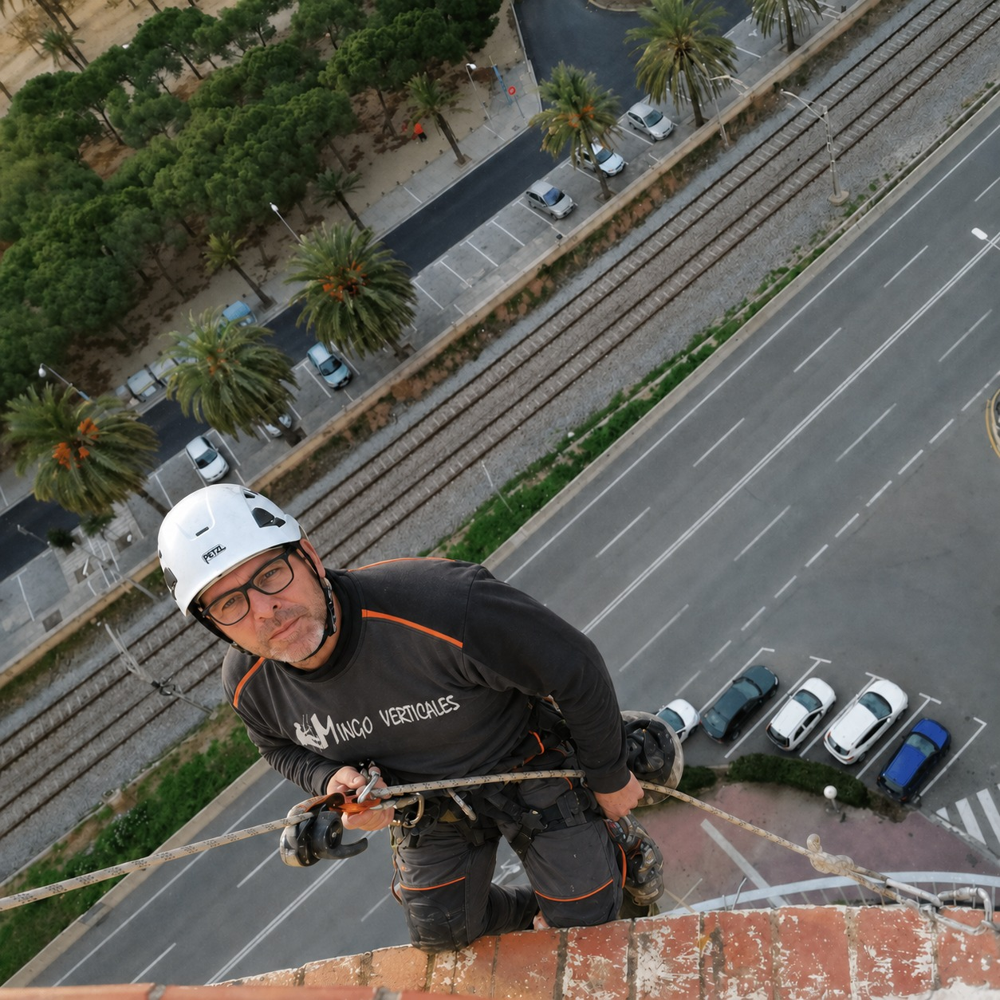

Mataró · Maresme · Barcelona · Barcelonès
Trabajos verticales, fachadas y reformas con atención directa
Mingo Verticales realiza trabajos en altura, rehabilitación de fachadas, impermeabilizaciones, obras, restauración de bañeras y pintura para comunidades, negocios y particulares.
- Dos contactos directos
- Valoración según cada trabajo
- Servicio en Barcelona y Maresme

Atención directaJosé y Sebas
Servicios
Soluciones para fachadas, reformas y trabajos en altura
Desde trabajos verticales hasta impermeabilizaciones, pintura y rehabilitación de fachadas, la empresa ofrece distintos servicios para comunidades, edificios, negocios y viviendas particulares.
Trabajos verticales y en altura
Acceso mediante técnicas verticales para intervenir en fachadas y puntos de difícil alcance cuando este sistema resulte adecuado para la obra.
Ver servicioRehabilitación de fachadas
Saneado y reparación de zonas deterioradas para conservar la envolvente del edificio y actuar sobre desperfectos visibles.
Ver servicioImpermeabilizaciones
Tratamiento de juntas, fisuras y puntos expuestos para reducir filtraciones y proteger las superficies afectadas.
Ver servicioObras y reformas
Reparaciones y actuaciones de mejora para viviendas, comunidades, locales y edificios, con una valoración previa del trabajo necesario.
Ver servicioRestauración de bañeras
Valoración del estado de la bañera para determinar si puede recuperarse su superficie o si resulta más conveniente otra solución.
Ver servicioPintura en general
Pintura interior y exterior con preparación previa del soporte para renovar, proteger y mejorar el acabado de las superficies.
Ver servicioCómo trabajamos
Un proceso claro desde la primera consulta
Cada intervención se valora de forma individual para proponer la solución más adecuada según el tipo de trabajo, el acceso necesario y el estado del inmueble.
01Consulta
02Valoración
03Propuesta
- 01
Explica la necesidad
Indica la localidad, el tipo de inmueble, el problema y el servicio que necesitas.
- 02
Envía fotografías
Las imágenes ayudan a orientar la consulta, aunque no sustituyen una revisión cuando sea necesaria.
- 03
Se valora el acceso
En trabajos en altura se estudia qué sistema resulta adecuado según el entorno y la tarea.
- 04
Se concreta la actuación
La propuesta debe definir el alcance, los materiales y las condiciones del trabajo.
Zona de trabajo
Mataró, Maresme, Barcelona y Barcelonès
La empresa atiende principalmente trabajos en Mataró, la comarca del Maresme, Barcelona y el Barcelonès, según el tipo de intervención y el desplazamiento.
Preguntas frecuentes
Información útil antes de contactar
Algunas respuestas rápidas para resolver dudas habituales antes de solicitar una valoración.
¿Qué servicios ofrece Mingo Verticales?
Trabajos en altura, rehabilitación de fachadas, impermeabilizaciones, obras en general, restauración de bañeras y pintura en general.
¿En qué zonas trabaja?
Mingo Verticales trabaja principalmente en Mataró, el Maresme, Barcelona y el Barcelonès. Para otros desplazamientos, lo mejor es consultar directamente con la empresa.
¿Puedo enviar fotografías antes de una visita?
Sí. Puedes enviarlas a mingoverticales@gmail.com junto con la localidad y una explicación breve del problema.
¿Cómo solicito una valoración?
Llama a José al 647 235 314, a Sebas al 659 230 587 o utiliza el correo de la empresa.
Contacto
Cuéntales qué necesita el edificio o la vivienda
Indica el servicio, la localidad y el problema. Las fotografías pueden facilitar una primera orientación.